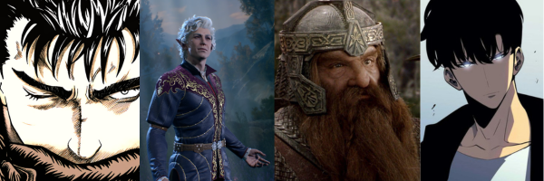
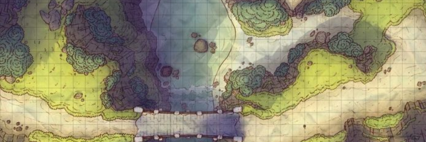

Bienvenido a D&D Play Content, aqui encontraras contenido para estar al dia con el nuevo contenido de Dungeons & Dragons y encontrar material para poder jugar tus propias partidas
¿Y que tipo de contenido encontrare aqui?
Pues en esta web encontraras todo tipo de contenido como tableros de juego, historias oficiales y de la comunidad de D&D, guia de juego y de creación de personajes
- Personajes predeterminados
- Plantillas de perosonajes en blanco
- Tableros de juego
- Dados online
- Inventario interactivo
- Conexion a OpenIA para crear personajes
- Historias
- Contenido actual
- Proximamente
Nuevo contenido
